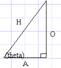
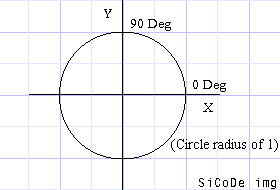
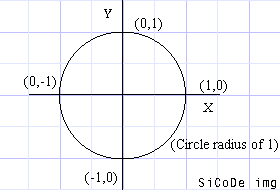
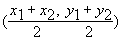

| HOME >> Tutorials >> Tutorial 7: Trigonometric Functions on the Calc and their Relevant Uses |
Advanced Game Techniques Tutorials
Advanced BASIC
Tutorial 7
Trigonometric Functions on the Calc and their Relevant Uses
Part 1: Introduction
First of all, your probably wondering what exactly advanced programming is. For our purposes, we can define advanced programming as the ability to use all the available facits of the TI-Basic to create quality and technicaly complex games. In order to do this you must understand how the calculator uses the commands on a very low level. To use TI-Basic to make quality games you have to know what your doing. Since ASM programming is very fast, you have to be able to program very intelligently to make quality games that will compete with them. The purpose of these tutorials is to explain several advanced programming techniques. By starting at game design and ending at 3-D programming. It explains mainly the theorys behind these techniques and not the exact syntax of things.
For these tutorials it is assumed that you already know how basic basically works. If you don't know the syntax and how to use things like 'If' statements or 'Lbl's' then you should go read the many other Basic Tutorials out there on the web.
Finally, this is a tutorial where you will actually learn something useful and that you can directly use in programming! [*MAKE SURE YOUR CALCULTOR IS IN DEGREE MODE, OR THIS WILL NOT WORK*]
Part 2: Trigono What?
Starting Off:
Why the heck do you want to know about trigonometry on the calc you ask? Well, you do. If you haven't figured it out already, mathmatics is the key to programming higher level games. Math is at the core of every grahpicaly intensive game you play. If you are a real programmer then you like math, now if you consider yourself a real programmer and don't like math, then:
- you just don't like math class and actually like math itself, or
- you're not destined to become a great programmer.
What Trigonometric Functions:
Trigonometry is basically the study of properties that deal with triangles, hence the tri part of the word. As you will soon learn, triangles are the greatest polygons ever. Because of their special properties (which is what trigonometry is about...), triangles are used in 3D programming, they also make it really easy to do other cool stuff. Note that I got just about all this from my HighSchool Algebra II book. Here is a image of a triangle, with the relevant trig functions beneath it.
|  |
All descriptors of the sides are from the point of view of Q, the angle which you know.
sin (theta) = O/H (Opposite divided by Hypotenus)
cos (theta) = A/H (Adjacent divided by Hypotenus)
tan (theta) = O/A (Opposite divided by Adjacent) |
Part 3: What Does It All Mean Man!
Useful Uses Of These Functions:
Let me briefly explain WHY you want to know these functions. By supplying either sin or cos with an angle, they will give you coord for the X,Y point on a circle! And since when you rotate something, the points follow the path of a circle, you can see these functions will be very useful.
|  |
Just belive me and imagine that that is a perfect circle. Now, if you look back up at the triangle, you'll see that sin=y, cos=x. Because the Opposite side lies on the Y axis, and Adjacent side lies on the X axis, we're not really going to go into tan in this tutorial, Douglas and I are using tan to make our 3D golf engine. Ok, back to the circle, the numbers that go around the circle are the°. You'll notice that the 0 degree mark is on the X asix to the right. You'll need to know that so keep it in mind. (note that all° on the circle are supposed to lie along each major axis. Now, when you give a degree value to either Sin or Cos, it gives you a number, what does this number mean? Take a look at this table. |
| Sin: |
0°=0 |
90°=1 |
180°=0 |
270°=-1 |
| Cos: |
0°=1 |
90°=0 |
180°=-1 |
270°=0 |
Notice any correlation between the values and the circle? Here it is again (in x,y format, and you know that (x,y) is (cos,sin), because you read it up above). |
(1,0) - 0°
(0,1) - 90°
(0,-1) - 180°
(-1,0) - 270° |
|  |
Holy Cow! Look at that, those are the points around the circle at all major intersections of the circle and an axis. |
Now so that you understand it more, lets take another example. Lets say you wanted to make a line from the origin at a 45° angle. To do this you need two points, the origin and the another point that is at a 45° angle. To find the second point, we just plug our values into the ordered pair with sin and cos. |
Note: The window should be Zstandard Press   Pt-On(cos(45),sin(45)) |
Now, this evaluated to Pt-On(.71,.71), which is the correct point. So now do: |
| Line(0,0,cos(45),sin(45)) |
You'll notice that the line doesnt seem to be at a 45° angle. |
After setting the window to Zstandard, press 
Now do the line again, you can see that it is at exactly 45°.
Here's a program to show you the line rotating around: |
PRGM:CIRC1
For(A,0,360,10
Line(0,0,cos(A),sin(A))
End |
Part 4: Rotating it
Making Bigger Circles:
After doing the above Prgm, you'll notice that the circle created is rather small. In order to change the radius, you simply change the coeffecient in front of both the cos and sin. In the above Prgm the coeffecient for each is 1.
PRGM:CIRC2
ClrDraw
Input R
For(A,0,360,8)
Line(0,0,Rcos(A),Rsin(A))
End |
But now your thinking, thats nice, but I want to Rotate something, not make circles! Ok, Ok. Thats what I'm getting to. First off, we're going to rotate just a simple line. In order to do this, you could do the folliwing: |
Line(Rcos(A),Rsin(A),Rcos(180+A),Rsin(180+A)
Note: The angle value can be above 360° or below 0° and it will work exactly the same! |
Now stick that line command in Prgm CIRC2 and run it. You'll see that it is slow. But don't worry there are several ways to make it go faster. To start off, the sin and cos commands go slow, and it is unnecessary to calculate sin and cos 4 times and multiply 4 times. To help you out, I have the following diagram: |
It wasn't hard to derive those points, I just found the midpoint of two points (such as (-y,x) and (x,y) to derive (x-y,y+x)). The midpoint formula is:

Now we're going to make a new Prgm.
Remember not to use Y when drawing to the graph screen, the calc may occasionally set it to 0 |
PRGM:CIRC3
ClrDraw
5->R
For(A,0,360,8)
Rcos(A)->X
Rsin(A)->Z
ClrDraw
Line(X,Z,-X,-Z)
End |
Notice how the ClrDraw is right in front of the Line command, this sets flicker to a minumum |
PRGM:CIRC32
ClrDraw
6->R
For(A,0,360,8)
Rcos(A)->X
Rsin(A)->Z
ClrDraw
Line(X,Z,-X-Z,-Z+X)
Line(X,Z,-X+Z,-Z-X)
End |
But that still flickers to much, so: |
PRGM:CIRC33
ClrDraw
6->R
For(A,0,360,8)
Rcos(A)->X
Rsin(A)->Z
Line(S,U,-S-U,-U+S,0
Line(S,U,-S+U,-U-S,0
Line(X,Z,-X-Z,-Z+X)
Line(X,Z,-X+Z,-Z-X)
X->S:Z->U
End |
Ahh, that looks better. Now you can figure out how to but in a key press statement that would either add to the angle or subtract depending on what key is pressed. |
Part 4: A Sample Game
Pregenerated Arrays:
Wouldn't it be cool if you could have a game where you drive around a little car, and depending on what speed you are going, your turn radius is affected accordingly? That would be easy, and the source is written below.
| But first, we need to still make it go faster! How you ask? By not having to use cos and sin. Notice how in the above PRGM's only every 10 angle is used. So what we do is create a list that contains the values for sin and cos that we are going to use. Here's the set up program: |
PRGM:ASET
18->dim(L1
L1->L2
For(A,0,360,20
cos(A)->L1((A/20)+1)
sin(A)->L2((A/20)+1)
End |
| After you run that program, you can run this game: |
| Race Car: |
|
| PRGM:GO |
|
| ClrHome |
|
Disp"____GO____"
Disp"< =Turn Left"
Disp"> =Turn Right"
Disp" ^ = Speed Up"
Disp"DEL=Brake" |
|
| Pause |
|
| 20->D |
|
Degree
AxesOff
Zstandard
1.8Xmin->Xmin
1.8Ymin->Ymin
1.8Xmax->Xmax
1.8Ymax->Ymax
Zsquare |
|
0->S:0->N:0->O
0->P:0->Q
0->U:0->T
40->A |
Sets up variables |
ClrDraw
While 1
0:Repeat Ans
getKey->K
End |
Just a line with 0 on it, sets the Ans variable to 0, this just keeps looping until the Ans variable is changes, which will be when you push a key. Without the 0 then the Ans variable could be 1 and it would not loop. |
If K=25 and S<6
S+.2->S |
If push acclerator and are going less that 6. This controls the max speed |
If K=23:Then
If S>.5:Then
S-S/6->S:Else
S-.4->S:End
End |
If they're going so fast then it gradually reduces their speed. |
If S<0:-D->E
If S>=0:D->E |
If your backing up(which you do by holding the brake) then the controls to turn left and right are backwards. |
If K=24
A+E->A
If K=26
A-E->A |
This is just whether you turn right or left |
If A>360
A-360->A
If A<0
A+360->A |
The reason this statement is required is because we're not using cos( and sin(, we're using lists, so without this it would give you a Dim error. |
L1((A/20)+1)->X
L2((A/20)+1)->Z |
Gets the value from the list. |
| SX+N->N:SZ+O->O |
This moves the car, as you can see, (N,O) is the center of the car. You take the new point on an imaginary circle, expand it by your speed, and add that point to your old point to get where the car is. Without this the car would just sit in one place and spin, and not move forward. |
Line(X+N,Z+O,(-X-Z)+N,(-Z+X)+O
Line(X+N,Z+O,(-X+Z)+N,(-Z-X)+O |
The line commands, except for the offset of (N,O) which is added to each one, the Line( commands are the same as above. |
| End |
|
If you don't understand this stuff:
- Reread the tutorial.
- Reread it again (throughly, and experiment with the code)
- Then I can't write good tutorials, or
- You should rethink wanting to program Advanced BASIC
Written by Brandon Green.
Tutorial is property of Brandon Green, © 2000. Do not use without permision. Algorithms are property of Brandon Green, e-mail for permision to use.
Problems with this page?
Contact the Webmaster.